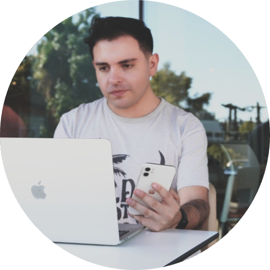

LATAM Airlines
Data Scientist, marketing science.
Santiago, Chile — Ingeniero matemático · Magíster en Data Science
Trabajo como data scientist en LATAM Airlines, en marketing science, y enseño machine learning, econometría e inteligencia artificial en la Universidad Técnica Federico Santa María.
01 / Cursos
Regresión lineal, causalidad, inferencia, variables dummy, heterocedasticidad y series de tiempo, con clases interactivas y simuladores.
En curso · T3 2026 ICS-294 · USM →Six weeks of Python in Colab, data analysis, and machine learning models, ending with a final project.
In progress · Oct–Dec 2026 Casa Central · Vitacura →IA, machine learning e IA generativa aplicados a modelos de negocio, con un prototipo construido a lo largo del semestre.
2026 ICS64225 · USM →Machine learning aplicado a negocios, programando junto a asistentes de IA. Parte del programa Erasmus Mundus.
EGEI UTFSM →Fundamentos, modelos y aplicaciones de machine learning a problemas de negocio.
USM Machine Learning →02 / Trayectoria
Desde 2015 hago clases. Desde 2021 trabajo con datos en la industria. Una cosa alimenta a la otra.
Industria
Data Scientist, marketing science.
Data Scientist, análisis comercial.
Data Scientist, luego Senior y Expert. Lideré un equipo de people analytics y análisis de texto.
Docencia
Machine learning, econometría e IA aplicada a negocios, incluido el magíster Erasmus Mundus.
Instructor de los bootcamps de Data Science y Data Analyst.
Data Science para Ingeniería Matemática.
Profesor de matemáticas de pregrado y coordinador del departamento.
Formación
Universidad del Desarrollo.
Universidad Diego Portales.
Universidad de Santiago.

03 / Sobre mí
Soy ingeniero matemático y magíster en Data Science. Vivo en Santiago, me gusta viajar y conocer otros países, y sigo aprendiendo todo el tiempo, sobre todo de análisis de datos. En mis cursos intento que cada modelo se entienda primero con intuición y después con código.
04 / Contacto